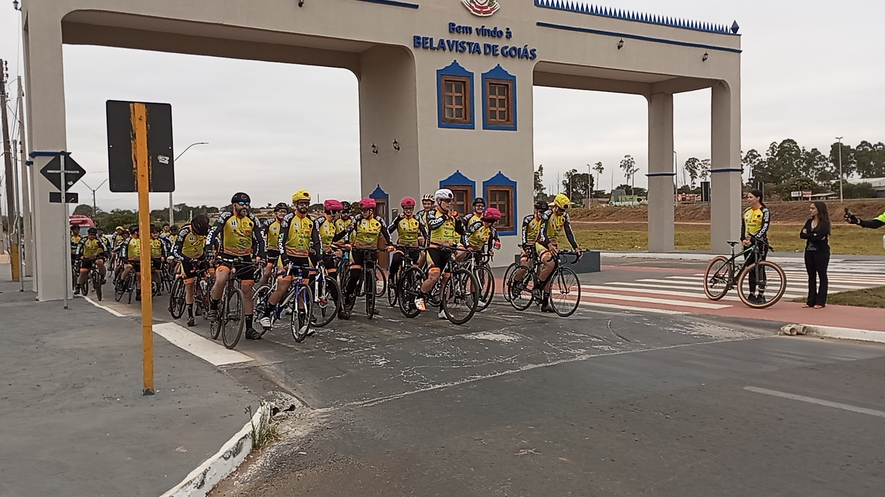
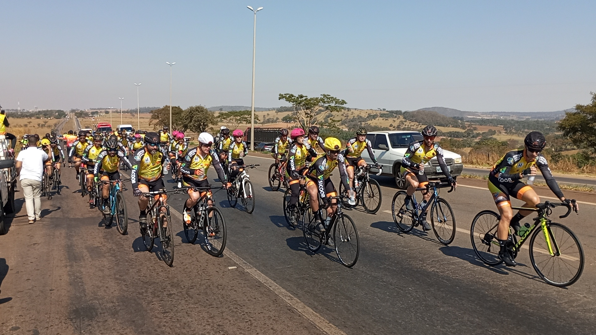

Passeio ciclistico Aruanã
Foi realizado do dia 13 ao dia 15 vigésima edição do passeio ciclístico Bela Vista a Aruanã A vigésima edição do passeio ciclístico Bela Vista a Aruanã está sendo realizada este final de semana de 13 a 15 de julho. Seguindo o tradicional cronograma, na quinta-feira foi realizado o congresso em Bela Vista de Goiás com a presença da maioria dos ciclistas participantes do evento. No dia seguinte, a saída de Bela Vista foi logo de manhazinha com a recepção da prefeita de Bela Vista Narcia Kelly que acompanhou os atletas em sua bicicleta até a saída da cidade acompanhada pelo vereador presidente da Câmara Municipal de Vereadores Dione do Cará. Antes aquela visita a um importante patrocinador, o supermercado 07 que serviu um belo café da manhã aos participantes do passeio. Depois da benção do padre Luiz Fernando a partida foi dada rumo ao posto de combustíveis Barcelona, outro patrocinador.
Na segunda saída o destino foi a Assembleia Legislativa do Estado de Goiás, onde o presidente da casa, deputado Bruno Peixoto desejou sucesso aos atletas e apoiadores do evento. Logo em seguida foi servido o lanche e o destino desta vez foi a cidade de Goianira onde o comboio ciclístico foi recepcionado com um almoço dando mais sabor a recepção calorosa daquele povo. Na oportunidade a vereadora Katia da Saúde prestou uma homenagem a atleta da cidade Luzia. Próximo destino o patrocinador Frankmar Motos o qual seu proprietário, de mesmo nome, que também é ciclista representante da cidade de Inhumas onde foi entregue a homenagem ao atleta e patrocinador, pelos seus familiares a pedido dos organizadores. Destaque para o lanche servido pela família do Frankmar. Outra parada foi no posto de combustíveis do Grupo California onde foi servido outro lanche para o reforço físico dos atletas e apoiadores.
A última parada do primeiro dia de passeio ciclístico, foi na cidade de Itaberaí de Goiás, onde os percipientes foram recebidos pelos os assessores da prefeita Rita de Cassia, secretaria de desenvolvimento e Paulo Victor, secretário de esportes do município. Ainda na cidade de Itaberaí os atletas e apoiadores jantaram e pousaram para o merecido e necessário descanso depois de terem percorridos cerca de (160) cento e sessenta km. No segundo dia de evento, três cidades ainda serão visitadas pelo comboio ciclístico antes da cidade final ARUANA. Itapuranga, Faina e Araguapaz. No segundo dia de passeio ciclístico, a saída foi antes do sol nascer as cinco e quinze, chegando a Itapuranga antes das nove horas da manhã, onde os componentes do passeio foram recebidos com uma recepção calorosa e muito bem organizada pelo prefeito Paulo Imila e seus assessores. A próxima cidade foi Faina com a primeira dama Lurdinha fazendo as honras do prefeito Paulo Roberto acompanhada de vereadores e dezenas de populares. Araguapaz foi a penúltima cidade a ser visitada pelo passeio, local onde os componentes almoçaram e logo em seguida partiram rumo ao ponto final a cidade as margens do imponente rio Araguaia, a cidade turística de Aruanã. Local escolhido para mostrar o verdadeiro foco do passeio ciclístico Bela Vista a Aruanã, a preservação do nosso meio ambiente.